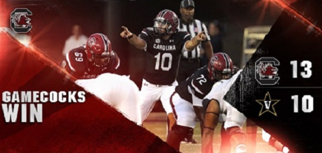
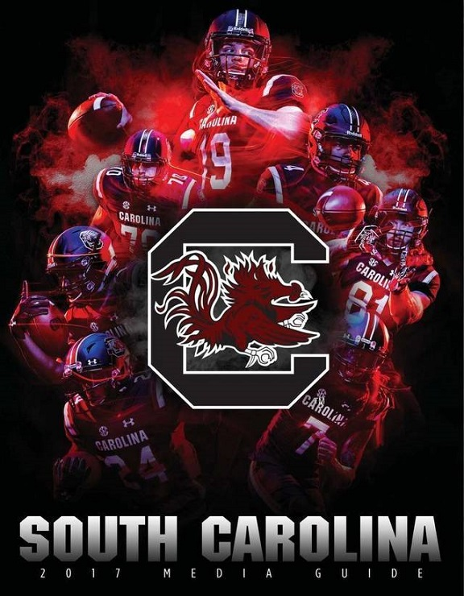

<!DOCTYPE html>
<html></html>

<head>

<title>South Carolina Gamecock's Fanpage</title>

<link href="main.css" rel="stylesheet">

<meta name="viewport" content="width=device-width, initial-scale=1">

</head>

<body>

  <div class="container">

    <header>
      <h1><b>South Carolina Gamecocks Football</b></h1>
      
    </header>

    <main>
        <p><b><a href="https://247sports.com/college/south-carolina/Article/South-Carolina-Gamecocks-improve-road-record-after-one-win-2016-season-110050086">News Article</a></b></p>

        <p><a href="http://www.gamecocksonline.com/"> South Carolina Gamecocks</a> won one game away from home in 2016.
        With more experience, a steady hand at quarterback, and a better overall
        team the Gamecocks have turned around their struggles away from Williams-Brice Stadium.
        The team played six games away from Columbia last season and went 1-5.
        There were freshmen, especially on offense, all over the field.</p>
        <p>A young team acknowledged road crowds against the likes
        of Mississippi State, Florida, and Clemson caused problems in executing on offense.
        A year later the Gamecocks are 3-2 away from home with back-to-back season opening wins
        in Charlotte against N.C. State and the conference opener against Missouri.
        They also battled for a win against Tennessee in front of a crowd over 90,000.
        The two losses were in front of even larger crowds, a seven-point loss against
        Texas AM and a two-touchdown loss on the road against top-ranked Georgia.</p>

        

        <table>
          <caption><b>2017 Football Schedule</b></caption>

            <thead>
              <tr>
                <th>Date</th>
                <th>Opponent</th>
                <th>Result</th>
                <th>Record</th>
              </tr>
            </thead>

            <tbody>
              <tr class="win">
                <td aria-label="Date">Sat, Sept 2</td>
                <td aria-label="Opponent">NC State</td>
                <td aria-label="Result">W 38-28</td>
                <td aria-label="Record">1-0</td>
              </tr>

              <tr class="win">
                <td aria-label="Date">Sat, Sept 9</td>
                <td aria-label="Opponent">Missouri</td>
                <td aria-label="Result">W 31-13</td>
                <td aria-label="Record">2-0</td>
              </tr>

              <tr class="loss">
                <td aria-label="Date">Sat, Sept 16</td>
                <td aria-label="Opponent">Kentucky</td>
                <td aria-label="Result">L 23-13</td>
                <td aria-label="Record">2-1</td>
              </tr>

              <tr class="win">
                <td aria-label="Date">Sat, Sept 23</td>
                <td aria-label="Opponent">LA Tech</td>
                <td aria-label="Result">W 17-16</td>
                <td aria-label="Record">3-1</td>
              </tr>

              <tr class="loss">
                <td aria-label="Date">Sat, Sept 30</td>
                <td aria-label="Opponent">Texas AM</td>
                <td aria-label="Result">L 24-17</td>
                <td aria-label="Record">3-2</td>
              </tr>

              <tr class="win">
                <td aria-label="Date">Sat, Oct 7</td>
                <td aria-label="Opponent">Arkansas</td>
                <td aria-label="Result">W 48-22</td>
                <td aria-label="Record">4-2</td>
            </tr>

            <tr class="win">
              <td aria-label="Date">Sat, Oct 14 </td>
              <td aria-label="Opponent">Tennessee</td>
              <td aria-label="Result">W 15-9</td>
              <td aria-label="Record">5-2</td>
            </tr>

            <tr class="tbd">
              <td aria-label="Date">Sat, Oct 28 </td>
              <td aria-label="Opponent">Vanderbilt</td>
              <td aria-label="Result">TBD</td>
              <td aria-label="Record">TBD</td>
            </tr>

            <tr class="tbd">
              <td aria-label="Date">Sat, Nov 4 </td>
              <td aria-label="Opponent">Georgia</td>
              <td aria-label="Result">TBD</td>
              <td aria-label="Record">TBD</td>
            </tr>

            <tr class="tbd">
              <td aria-label="Date">Sat, Nov 11 </td>
              <td aria-label="Opponent">Florida</td>
              <td aria-label="Result">TBD</td>
              <td aria-label="Record">TBD</td>
            </tr>

            <tr class="tbd">
              <td aria-label="Date">Sat, Nov 18 </td>
              <td aria-label="Opponent">Wofford</td>
              <td aria-label="Result">TBD</td>
              <td aria-label="Record">TBD</td>
            </tr>

            <tr class="tbd">
              <td aria-label="Date">Sat, Nov 25 </td>
              <td aria-label="Opponent">Clemson</td>
              <td aria-label="Result">TBD</td>
              <td aria-label="Record">TBD</td>
            </tr>
          </tbody>
          </table>

         <table>
          <caption><b>South Carolina Gamecocks Kicking Statistics</b></caption>
            <thead>
              <tr>
                <th>Name</th>
                <th>XPM</th>
                <th>XPA</th>
                <th>XP%</th>
                <th>FGM</th>
                <th>FGA</th>
                <th>FG%</th>
                <th>1-19</th>
                <th>20-29</th>
                <th>30-39</th>
                <th>40-49</th>
                <th>50+</th>
                <th>LNG</th>
                <th>PTS</th>
              </tr>
            </thead>

            <tbody>
              <tr class="white">
                <td aria-label="Name">Parker White</td>
                <td aria-label="XPM">19</td>
                <td aria-label="XPA">19</td>
                <td aria-label="XP%">100</td>
                <td aria-label="FGM">10</td>
                <td aria-label="FGA">20</td>
                <td aria-label="FG%">50</td>
                <td aria-label="1-19">0/0</td>
                <td aria-label="20-29">4/4</td>
                <td aria-label="30-39">4/5</td>
                <td aria-label="40-49">2/9</td>
                <td aria-label="50+">0/2</td>
                <td aria-label="LNG">47</td>
                <td aria-label="PTS">49</td>
              </tr>

              <tr class="woznick">
                <td aria-label="Name">Alexander Woznick</td>
                <td aria-label="XPM">10</td>
                <td aria-label="XPA">11</td>
                <td aria-label="XP%">90.9</td>
                <td aria-label="FGM">1</td>
                <td aria-label="FGA">3</td>
                <td aria-label="FG%">33.3</td>
                <td aria-label="1-19">0/0</td>
                <td aria-label="20-29">0/0</td>
                <td aria-label="30-39">1/2</td>
                <td aria-label="40-49">0/1</td>
                <td aria-label="50+">0/0</td>
                <td aria-label="LNG">32</td>
                <td aria-label="PTS">13</td>
              </tr>
            </tbody>
          </table>
        </main>

        <aside>
          <h2><b>Notable seasons</b></h2>
            <ul style="list-style-type:disc">
              <li><a href="https://en.wikipedia.org/wiki/1933_South_Carolina_Gamecocks_football_team"> 1933 – Undefeated in the Southern Conference</a></li>
              <li><a href="https://en.wikipedia.org/wiki/1969_South_Carolina_Gamecocks_football_team"> 1969 – ACC champions</a></li>
              <li><a href="https://247sports.com/college/south-carolina/Bolt/Throwback-Thursday-Gamecocks-Black-Magic-37589840">1984 – "Black Magic"</a></li>
              <li><a href="https://en.wikipedia.org/wiki/2010_SEC_Championship_Game">2010 – SEC East champions</a></li>
              <li><a href="https://en.wikipedia.org/wiki/South_Carolina_Gamecocks_football">2011 – "First 11-Win Season"</a></li>
              <li><a href="http://www.grownpeopletalking.com/2013/01/proud-as-gamecockback-to-back-11-win.html">2012 – "Back-to-Back" 11-Win Seasons</a></li>
              <li><a href="https://en.wikipedia.org/wiki/South_Carolina_Gamecocks_football">2013 – "Three consecutive" 11-Win Seasons</a></li>
            </ul>

            

          <h2><b>USC Top Football Players</b></h2>
            <ol type="1">
              <li class="players">GEORGE ROGERS, RB, 1977-80</li>
              <li class="players">CONNOR SHAW, QB, 2010-13</li>
              <li class="players">MARCUS LATTIMORE, RB, 2010-12</li>
              <li class="players">ALSHON JEFFERY, WR, 2009-11</li>
              <li class="players">JEFF GRANTZ, QB, 1973-75</li>
              <li class="players">J.D. FULLER, LB, 1979, 1981-83</li>
              <li class="players">TODD ELLIS, QB, 1986-89</li>
              <li class="players">BRANDON BENNETT, RB, 1991-94</li>
              <li class="players">STERLING SHARPE, WR, 1983, 1985-87</li>
              <li class="players">STEVE TANEYHILL, QB, 1992-95</li>
            </ol>


        </aside>

        <footer>
          <a href="https://www.instagram.com/gamecockfb/?hl=en">
           </a>

          <a href="https://twitter.com/GamecocksOnline?ref_src=twsrc%5Egoogle%7Ctwcamp%5Eserp%7Ctwgr%5Eauthor">
           </a>

          <a href="https://www.facebook.com/Gamecocksonline/">
           </a>


          <p><h3>By: Kevin</h3></p>
        </footer>

  </div>

</body>

</html>
